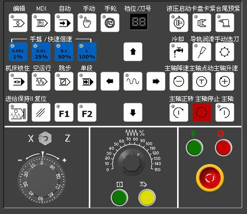
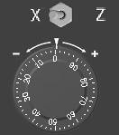

 液压启动
液压启动
 手动主轴降速
手动主轴降速  手动主轴升速
手动主轴升速
数码显示  X轴负方向移动
X轴负方向移动  编辑方式
编辑方式
 手动数据输入方式
手动数据输入方式
存储程序自动方式 手动进给
 手摇脉冲
手摇脉冲
返回参考点方式  液压台尾进退
液压台尾进退  手动主轴停止
手动主轴停止
手动主轴点动 手动润滑开闭
 Z轴负方向移动
Z轴负方向移动  手动快速
Z轴正方向移动
手动快速
Z轴正方向移动
液压卡盘卡紧松开 手动主轴正转
手动主轴反转
冷却液
 手动选刀
X轴正方向移动
手动选刀
X轴正方向移动
机床锁住
 空运行
空运行
 程序段跳步
程序段跳步
单程序段
进给保持
 程序保护
程序保护
 手摇脉冲0.001(快速倍率1%)
手摇脉冲0.001(快速倍率1%)  手摇脉冲0.01(快速倍率25%)
手摇脉冲0.01(快速倍率25%)
手摇脉冲0.1(快速倍率50%)
 手摇脉冲1(快速倍率100%)
手摇脉冲1(快速倍率100%)
页面切换
 页面切换
页面切换
紧停按钮 NC启动/停止 循环启动/进给保持
 进给率调整
进给率调整 
手轮